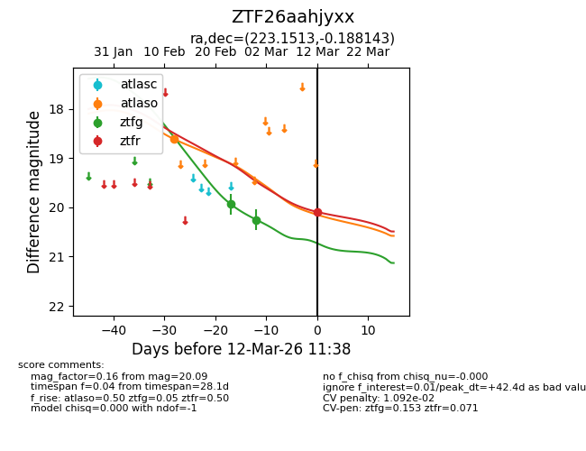
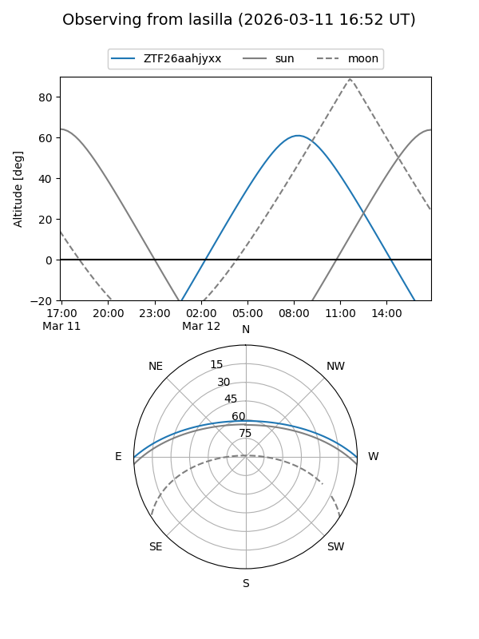
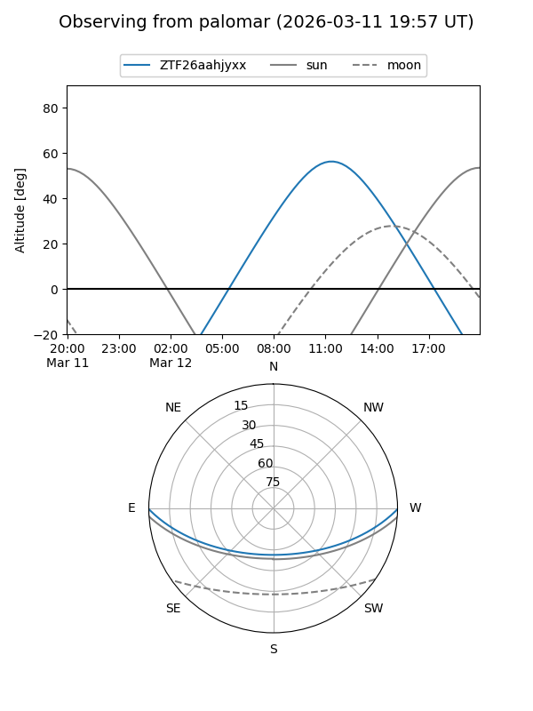
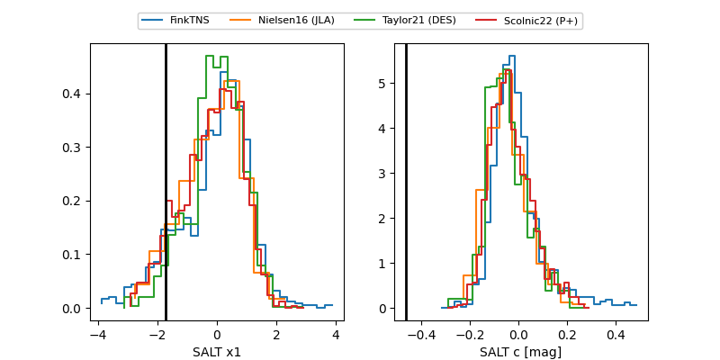

ZTF26aahjyxx
Target ZTF26aahjyxx at 2026-03-12 11:39
Aliases and brokers:
FINK: link
Lasair: link
ALeRCE: link
alt names
ZTF26aahjyxx (ztf,fink_ztf)
Coordinates:
equatorial (ra, dec) = 223.1513,-0.18814
equatorial (HMS+DMS) = 14:52:36.32,-00:11:17.32
galactic (l, b) = (354.7514,+50.08294)
Flags:
likely cv
Photometry:
last atlaso=18.62, ztfg=20.25, ztfr=20.09
1 atlaso, 2 ztfg, 1 ztfr detections
Lightcurve

Visibility


Additional plots
